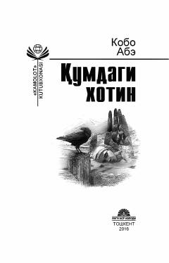

QXInson va jamiyat o'rtasidagi ziddiyatlarni ochib beruvchi mashhur yapon romani.
Ushbu asar inson va jamiyat o'rtasidagi murakkab ziddiyatlarni chuqur tahlil qiladi. Muallif majoziy tasvirlar orqali insonning yashashdan maqsadi va ezgulikka intilishi haqidagi falsafiy mushohadalarni bayon etadi.